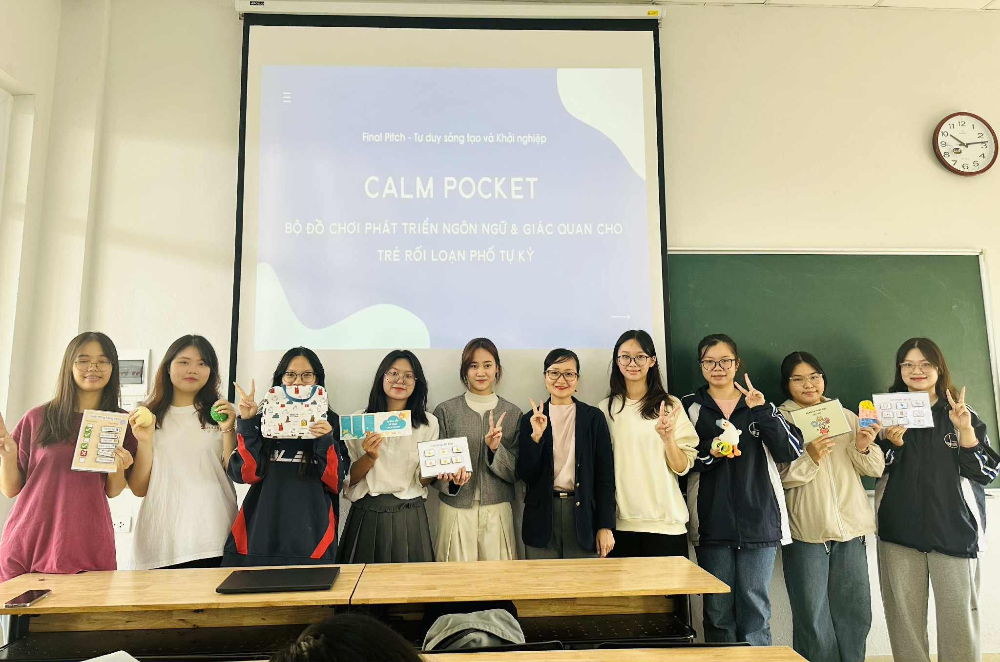

FINAL PITCH

Kết thúc buổi học cuối cùng của môn Tư duy sáng tạo và khởi nghiệp, em cảm thấy như vừa đi qua một hành trình dài mà bản thân trưởng thành rõ rệt qua từng bước. Buổi Final Pitch hôm nay không chỉ là cơ hội để nhóm em trình bày dự án Calm Pocket – Bộ công cụ đa giác quan dành cho trẻ tự kỷ, mà còn là giây phút em nhận ra sức mạnh của sự dấn thân, tinh thần sáng tạo và giá trị của những nỗ lực âm thầm suốt cả kỳ học.
Khi đứng trước lớp để thuyết trình về Calm Pocket, em vừa hồi hộp, vừa tự hào. Bởi đằng sau bộ công cụ là mong muốn mang lại một giải pháp nhân văn, thiết thực, giúp trẻ tự kỷ giảm quá tải giác quan và kết nối với thế giới xung quanh theo cách nhẹ nhàng hơn. Trong quá trình phát triển ý tưởng, nhóm em đã liên tục đặt câu hỏi, thử – sai – sửa, và mỗi lần như vậy, dự án lại tròn trịa hơn. Hôm nay khi trình bày, em nhận ra rằng điều quan trọng nhất không phải sự hoàn hảo, mà là việc cả nhóm dám bắt đầu và theo đuổi đến cùng.
Nghe pitch của các nhóm bạn, em càng mở rộng góc nhìn hơn. Mỗi dự án mang một cách tiếp cận vấn đề khác nhau, phản ánh sự đa dạng của tư duy sáng tạo. Có nhóm chọn hướng công nghệ, có nhóm tập trung vào cộng đồng, có nhóm lại khai thác những chi tiết rất đời thường. Điều em học được từ đó là: sáng tạo không phải thứ gì quá xa xỉ – nó nằm ngay trong khả năng nhìn thế giới bằng con mắt mới và dám thử nghiệm những điều mình chưa từng làm.
Chính tinh thần này đã khiến em tự thúc mình học thiết kế web để trình bày bài chiêm nghiệm cuối kỳ. Ban đầu em khá lo, vì em chưa từng làm web trước đây. Nhưng khi nghĩ đến việc biến bài viết của mình thành một sản phẩm trực quan, sinh động hơn – em quyết định thử. Không ai yêu cầu em làm điều đó, nhưng em muốn trở thành phiên bản tốt hơn của chính mình.
Sau buổi học cuối cùng, thứ em mang về không chỉ là kiến thức, mà là động lực. Động lực để tiếp tục theo đuổi những dự án có ý nghĩa. Động lực để không ngại bắt đầu một điều gì mới. Động lực để dám ước mơ và dám bước ra khỏi vùng an toàn. Môn học kết thúc, nhưng tinh thần khởi nghiệp và tư duy sáng tạo thì vẫn còn đang cháy trong em – mạnh hơn bao giờ hết.
Buổi final pitch không chỉ khép lại một môn học, mà mở ra cho em một hành trình mới: hành trình dám nghĩ, dám làm, dám sai và dám tạo ra giá trị cho cộng đồng.
Và Calm Pocket – dù mới chỉ là bước khởi đầu – đã giúp em tin rằng: chỉ cần mình đủ kiên trì, ý tưởng nhỏ cũng có thể trở thành thay đổi lớn.